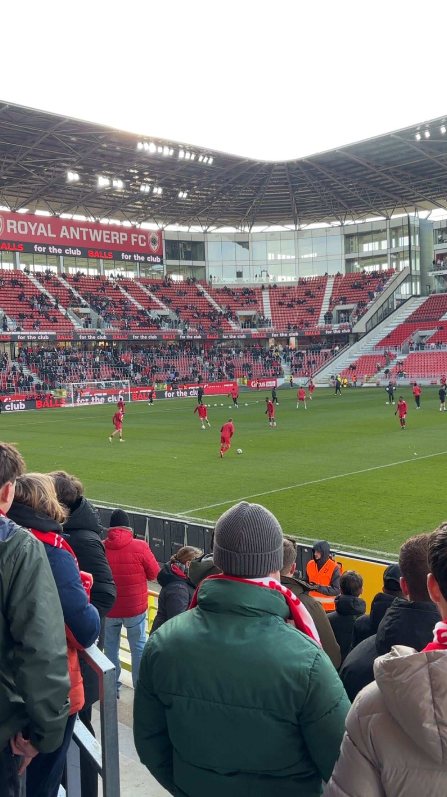
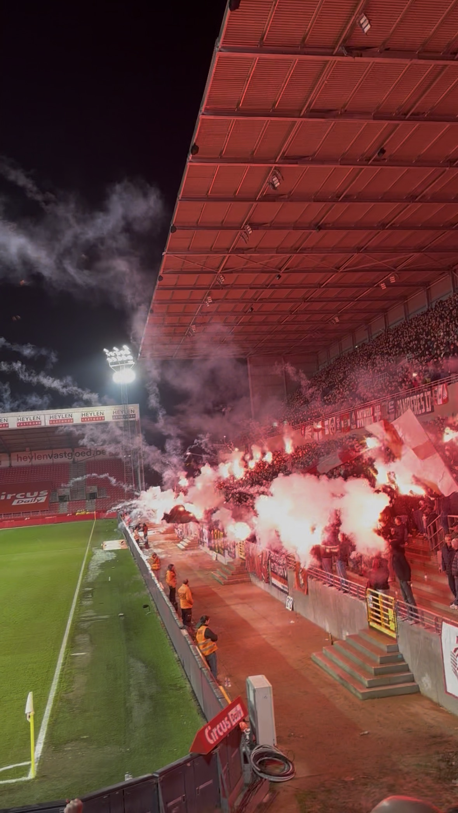

Passie en Sfeer
Beleving en Vrije Tijd
Naast mijn studies en de focus op softwareontwikkeling vind ik het belangrijk om de juiste balans te vinden. Het bezoeken van wedstrijden en het beleven van de unieke sfeer in het stadion geeft mij enorm veel energie.
Daarnaast houd ik mij in mijn vrije tijd graag bezig met tech, gaming en het volgen van de nieuwste digitale trends. Het vormt de ideale afleiding na een intense week vol programmeren.


